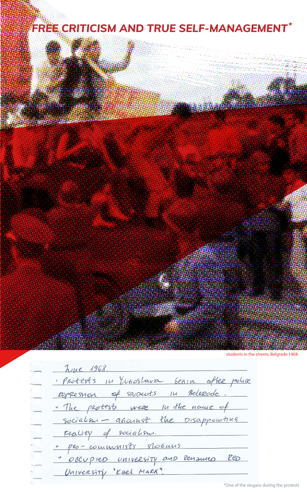

TBD
Download PDF



- Image used in the first visual (context): 3 of June, Belgrade 1968, students started the march from student campus in New Belgrade and clashed with police.
- Second visual (December 1966): calvary in the streets of Belgrade. There are very few photos (two for sure) from this protest organized after the US intervention in Vietnam. We couldn't find the original source or the author.
- Third visual (June 1968) Wiki says that the image is scanned from the daily press.
- Forth visual (post-1968) photo of student giving a speech at the occupied Belgrade University. Source (most likely) is privatized and then shut down news agency Tanjug.
- Red university Karl Marx was Belgrade University renamed after students occupied it on the 3 of June. It lasted one week, when Tito, on June the 9th in the evening gave his speech, promising changes in the Yugoslav political system.